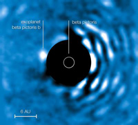

| Exo-Planets |
|  | |
| What is an Exo-planet? | |||
| An Exo-planet (extra solar planet) is a planet that has been found beyond our own solar system. | |||
| How do we locate Exo-planets? | |||
| There are several methods of locating Exo-planets that have been developed by different research groups. The most effective methods are Transiting and Radial Velocity. Here's a list with descriptions of how they're done. | |||
| Pulsar Timing | |||
Pulsar Timing was developed as a method to detect the timings in a pulsar. This method is sensitive enough to detect the minute gravitational pulls caused by orbiting stars which cause a slight change in the pulsar's timing. Since planets around pulsars may be rare and more than likely would not contain life, this method may not be suitable for finding earth like planets with life. |
|||
| Transiting planet | |||
The Transiting method uses the light from the star to tell us if there is something there. As a planet crosses the front of the star, it blocks light coming to us. Astronomers star at the star for days on end picking up the light and searching for a decrease in the light over that period of time. The decrease in light can tell us how large the planet is and how fast it is orbiting the star. If looked at using a spectrograph, the difference in the light's spectra reaching us can tell us what kind of atmosphere the planet contains. One issue with this method is that the planet and star must have an orbital plane in line with our line of sight. Others wise, there would be no transit visible to us. |
|||
| Direct imaging | |||
Direct imaging is the process of taking a picture of the star directly. There are a few issues with this, one of them being the star is immensely brighter than the planet. This is overcome by adding what's called a mask to the system. The mask simply blocks the light out from the star giving the imaging device the proper exposure for the planets themselves. A type of mask used for this is called a stellar coronograph. Another uses a camera with extremely high contrast but can only be used for small angles and is optimized for use with infrared to detect hot Jupiter type planets. |
|||
| Radial Velocity | |||
The radial velocity method uses the gravitational pulls of orbiting planets around the stars to cause a shift of the star. When this takes place, astronomers can detect the change in velocity of the planet using spectroscopic methods. They use the Hubble shift of the light to determine how much of a change there is in the star and in what direction the star is shifting. This can give an estimate for the minimum mass of the orbiting planet as well as the orbital period. |
|||
| Gravitational Micro-lensing | |||
Gravitational Micro-lensing uses the effects that large masses have on the curvature of space. When light passes near a large mass such as a star, the light is bent by its gravity. In this case, there needs to be two stars in-line with each other and the Earth. The middle star must contain the planet in the right orientation to the Earth and the other star. The planet can cause a further shift of the light's path when compared to just the star. This can help confirm the presence of another body around the middle Star. Since these alignments are rare, it makes it a difficult method of find large numbers of Exo-planets. |
|||